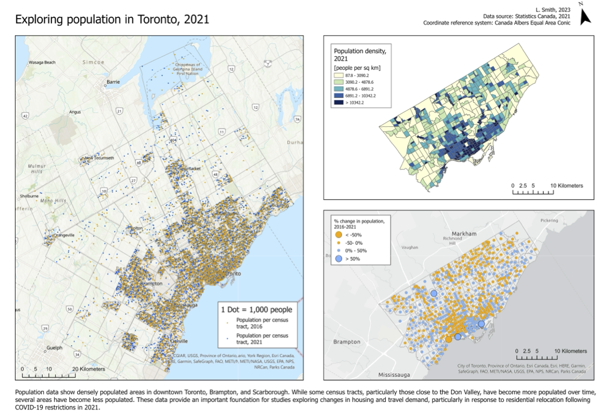
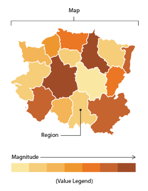
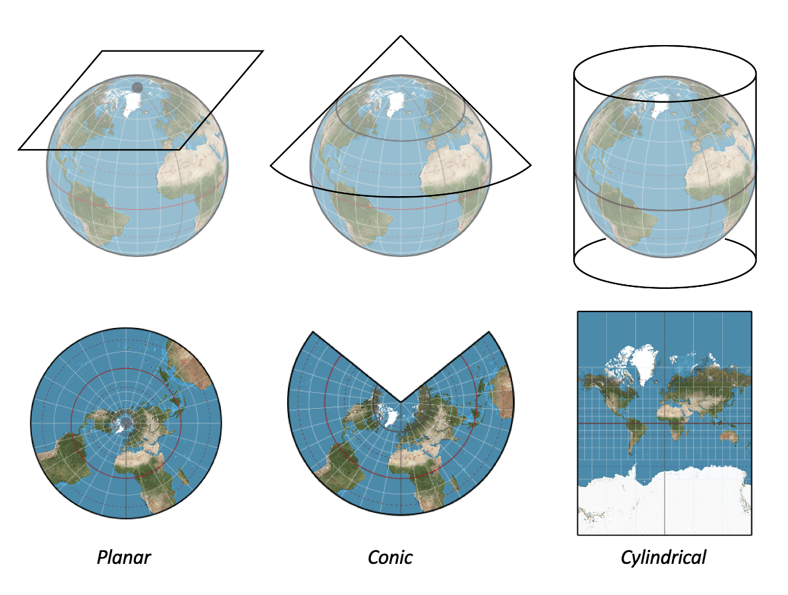
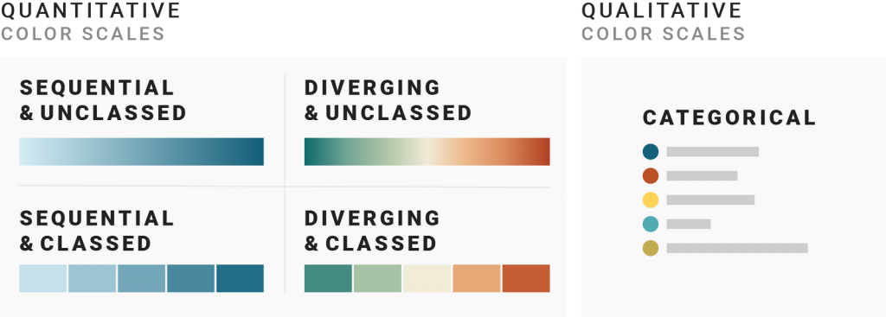
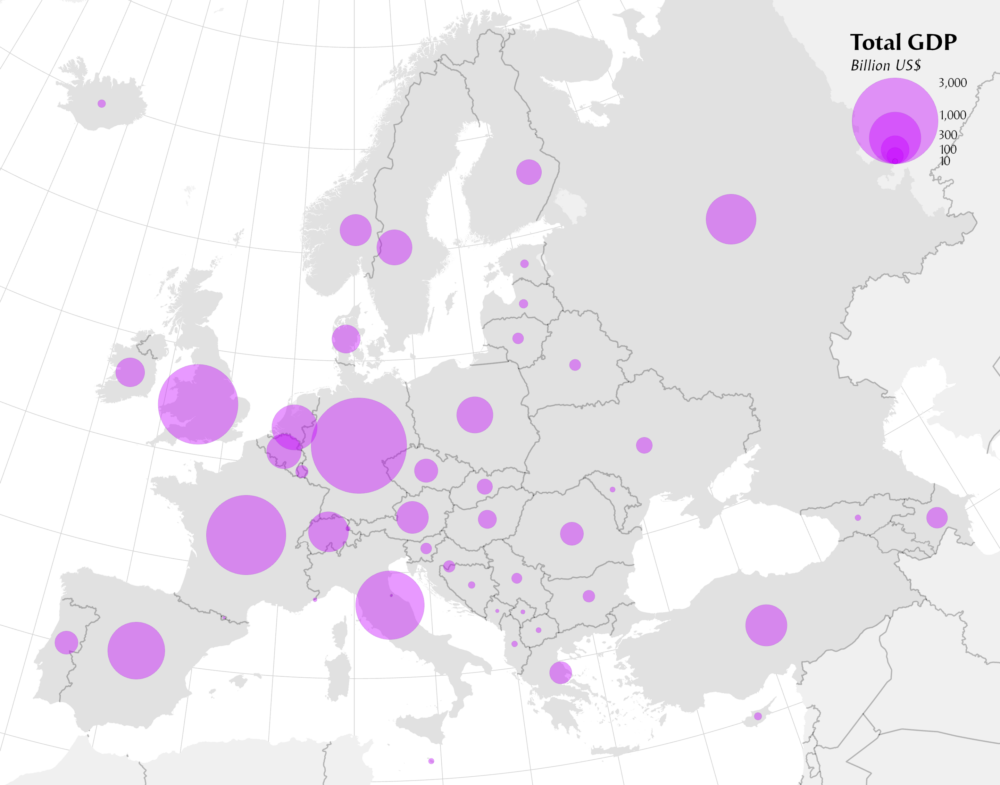
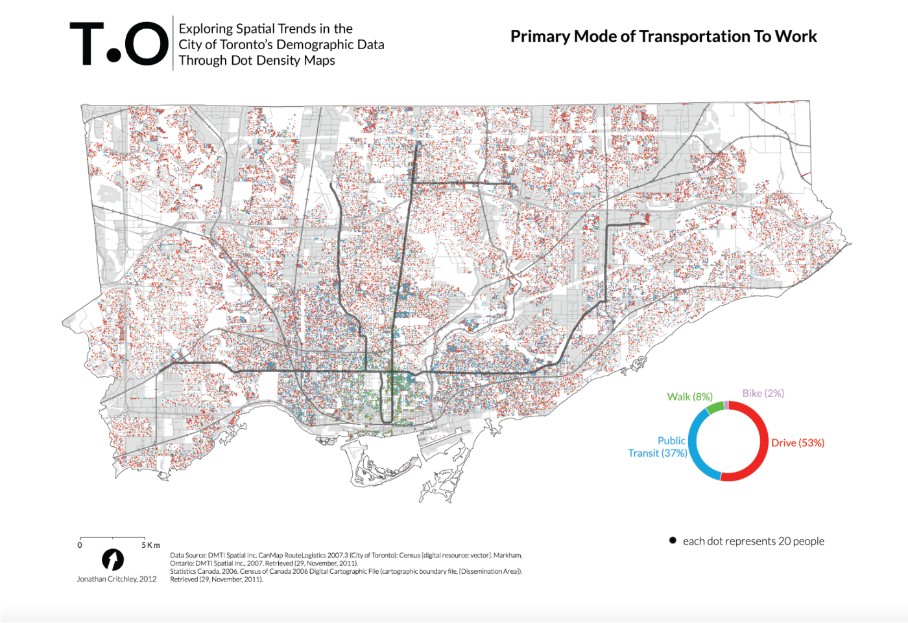
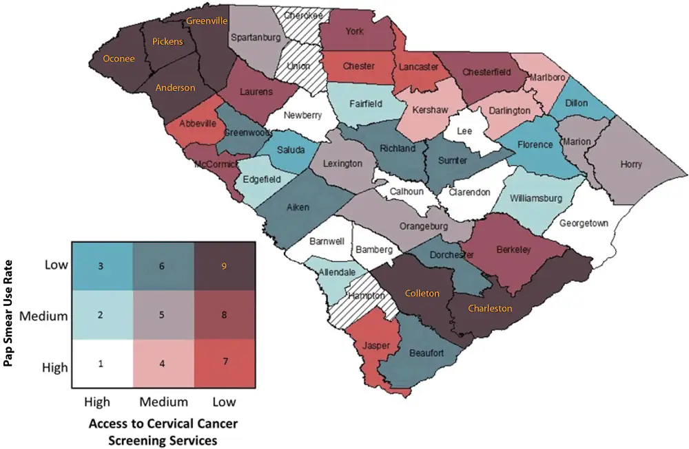
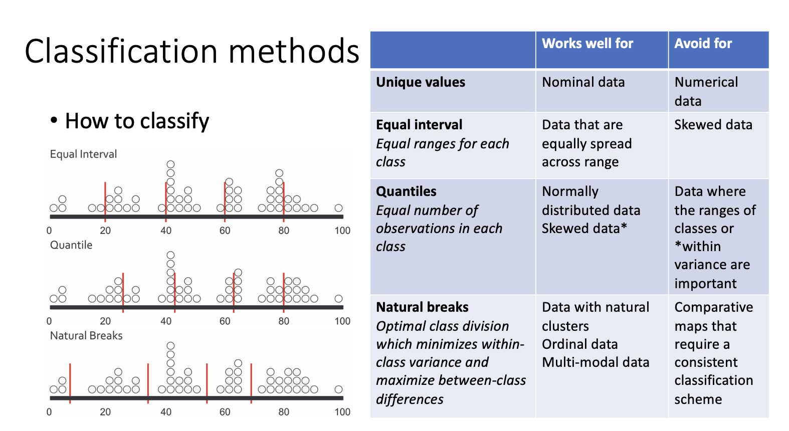

Exploring thematic map types and data classification
Lindsey Smith
May, 2024
Thematic maps focus on a particular topic, or “theme”, allowing us to present data values for one or more variables across a geographic area. Unlike reference maps, which tell us where things are, thematic maps tell us about spatial patterns within our data. For example, in an urban setting, we may be interested in mapping factors that contribute to food insecurity. Here, we could overlay data layers that quantify household income, grocery stores, food support schemes, and public transport access.
There are a range of thematic map types and ways to divide up and visualise our data. Though map design is somewhat subjective and there’s often no “right” way to present our data, ultimately, we want to make informed decisions about the map type we use, colour schemes, and the way we classify our data. For example, if we are mapping data for a single quantitative variable (e.g., % population graduating from high school) we will likely work with a single colour that sequentially increases in darkness so that low data values are represented by light colours. Conversely, if we were mapping data for a qualitative variable, such as land use type, colours must be distinct as we do not want to imply any order across our values.

Example of dot, choropleth, and proportional symbols maps representing population in Toronto
Below, you will learn about three common thematic mapping techniques, and give consideration to when and how best to use them.
Choropleth maps are typically used to portray data collected for spatial enumeration units, such as census tracts or dissemination areas. Shading and colour are relied on to represent values relative to each unit/area.

Sample choropleth map (Pithwa, 2020)
Choropleth maps are perhaps the most common map type you will have come across and are popular for presenting population density, demographic indicators, and weather and climate data. While these data are all ordered, a choropleth may also be appropriate for qualitative (also called nominal) data such as land use or most commonly spoken language. Though they are relatively easy to interpret, there are a couple of things to consider when reading or constructing choropleth maps:
Raw totals or counts must be adjusted to account for the size of the enumeration unit. For example, it would be appropriate to calculate a density measure for population where the total population count is divided by the total area of the spatial unit. As well as density measures, proportions (e.g., % population with access to high-speed internet), summary measures (e.g., median household income) and rates (e.g., number of births per 1,000 people) are all appropriate forms of data standardisation that may be used within choropleth maps.
Although choropleth maps work best when our spatial units are similar in size and shape, we have little control over this! Standardising our data therefore ensures values for each unit are presented on a common scale and can be compared more meaningfully.
As a side note, in instances where spatial enumeration units are less relevant and point data have been collected, you may want to look into creating a hexbin or grid map whereby counts are quantified within equal-sized units.
An equal area projection is preferred for maps presenting standardised data. Equal area projections, such as Canada Albers Equal Area Conic, prioritise the preservation of area. With the relative sizes of each spatial unit maintained, it is therefore easier to assess proportional relationships between spatial units without being confused by potential distortions.
There are plenty of resources to help you strengthen your understanding of coordinate references
systems. In brief, a projection is used to translate a 3D ellipsoidal surface, typically
representing the Earth’s surface, onto a 2D plane. The ellipsoidal surface, known as a datum, serves
as a model for the Earth. A common datum is WGS84 which provides a generalized representation of the
globe, but there are many others which are tailored to different regions of the Earth. A datum uses
a geographic coordinate reference system to measure Latitude and Longitude, typically recorded in
decimal degrees or degrees, minutes and seconds. If you have data in a geographic coordinate
reference system but wish to convert it to use another datum, you will need to transform the
coordinates using specific transformation parameters. Luckily, tools within GIS software can help us with this process… though it’s
important to ensure you are using the correct transformation depending on the geographic location of
your data!
A projection therefore takes our Latitude and Longitude values relative to a datum, and converts
them into a projected coordinate system so that they can be presented on a flat surface. Now our
coordinates are measured in Eastings and Northings which are often presented in metres. There are
many ways that this can be done, as shown in the image below, with each projection suited to
different regions of the Earth.

Examples of projection methods that convert a 3D surface to a flat plane
Different projections, however, distort/preserve various aspects of the Earth, such as shape, area, distance, or direction. When choosing a projection, you are often trading-off one characteristic for another. For example, a common projection we see used is the Mercator, but this was developed in 16th century for navigation. It preserves shape and angles but distorts area, particularly near the Poles. It’s continued use reflects a colonial legacy as it exhibits Eurocentric bias and exaggerates the size of land masses further from the Equator.
When choosing a colour scheme for our maps, we are often drawn to colours we find visually appealing, however, it’s important to make your selection with accessibility and ease of interpretation in mind.

Sequential, diverging, and categorical colour schemes (Muth, 2021)
Sequential colour schemes are used for data that has a natural ordering, such as quantitative data that range from low to high (e.g., density of fast food outlets). Here, a single colour that varies in lightness is most commonly used. Diverging colour schemes are suitable when there is a natural break point in the data. For example, a map of population change may use one colour for percentage increase and another colour for percentage decrease, where no change is the natural break point. Lastly, qualitative colour schemes are appropriate for non-ordered data (e.g., majority ethnic group per geographic unit) and rely on distinct colours to differentiate between values without implying any order.
Colour schemes should also be accessible to all users, including those with visual impairments or colour vision deficiencies. As a general rule, it’s best to avoid colours with low contrast or that are difficult to distinguish. Tools such as ColorBrewer and VizPalette provide helpful suggestions for choosing appropriate colour schemes.
It’s important to consider that the boundaries of the spatial units used to present our data values are often arbitrary. Abrupt boundaries can imply discontinuities in a spatial phenomenon, making it challenging for viewers to discern gradual changes in the data. Here, exploring the data further through smaller geographic units can help viewers understand the impacts of potential boundary effects.
While choropleths are arguably the most popular map type, it’s important to consider the nature of the data you’re working with and whether an alternative map type may more appropriate.
Proportional symbol maps are suitable for representing numerical or ordered data associated with point locations. Point data may be associated with either true point locations (e.g., temperature recordings at a weather station) or conceptual point locations (e.g., number of disease cases plotted at the centroid of a census tract).

Example proportional symbols map of GDP across Europe (Bplewe, CC BY-SA 4.0)
Symbol sizes are scaled proportionally to the data values. For example, if city A has twice the population of city B, the population symbol for city B will be half the size. Alternatively, you may classify your data into groups (we’ll come on to this!). Symbols will then increase in size incrementally for each group – we call this a graduated symbols map.
Proportional symbols maps offer flexibility in representing data. Unlike choropleth maps, the size of spatial units becomes irrelevant, allowing for both absolute (e.g., count values) and standardized data without the need for specific map projections. Proportional symbol maps are therefore helpful to use when the size of geographic units may distort the displayed data (e.g., when large census tracts dominate the display in a choropleth map) or when the size of spatial units are highly variable. Challenges, however, tend to lie with limiting map congestion due to overlapping symbols, legend design, and difficulty interpreting exact values based on symbol size.
Dot density maps are particularly effective for showing the spatial distribution of clusters and differences in densities or counts across large scales.

Example dot density map of commute mode in Toronto (Critchley, 2012)
They use equal-sized dots to represent a fixed quantitative value within a polygon. For example, if our dot has been set to represent 1000 people, for a census tract with a population of 3000, we would map three points.
Again, the area of the spatial unit holds importance, and an equal area projection is recommended so as not to distort the perceived density of the dots, however, we are not limited to the use of standardised data – so this map type can be pretty versatile!
One key issue with dot maps is that the dots are positioned randomly and some viewers may interpret points as actual locations of the variable being mapped. It’s also possible that dots may be plotted in locations where certain phenomenon cannot actually occur, such as waterways and parks. However, with ancillary information, it’s possible to develop dasymetric maps where the positioning of dots is limited to particular regions within polygon boundaries.
So far, we’ve been thinking about visualizing a single variable (in a univariate map) but it’s likely that you’re interested in mapping more than one variable. Coming back to our initial example about food insecurity, perhaps you plan to map the spatial distribution of food support schemes and household income… This is where multivariate maps come into play! They allow us to explore and visualize the relationships* between two or more variables simultaneously, either within a single map or a series of related maps.
*Descriptive relationships only… not statistical or causal!
Below I've highlighted a few approaches you may use for multivariate mapping:
Small multiples involve creating a series of separate but related maps, each depicting a different variable. These maps are arranged in a grid or sequence, allowing viewers to compare and contrast spatial patterns across multiple dimensions.
You may like to try combining multiple map types within a single layout. For example, it’s possible to overlay a choropleth map with a proportional symbols or dot density map to represent different variables simultaneously.
The notion of dot mapping can be quite easily extended to create categorical dot maps where distinct colours are used for each variable to be mapped.
If you have two variables represented by the same geographic units, you may try creating a bivariate choropleth map whereby the symbology from both maps is blended into a single colour scheme. If each variables have been categorised into three classes, a total of nine new classes are created with four key groups (high-high, high-low, low-high, and low-low) are most easily identified through strongest use of colour and shading.

Bivariate map of Pap test use and cervical cancer screening availability in South Carolina (Biesecker et al., 2020)
With any map you create, it’s important to decide where your data should be classified and how. Leaving your data unclassified (in a continuous format) may help highlight gradual trends across your data, however, often there is a trade-off between high numerical accuracy and visual interpretation. Imagine a continuous colour ramp in your legend, for example, and trying to identify the corresponding colour and value on a choropleth map… It becomes quite tricky!
Classifying our data into groups can make it more interpretable. For numeric data, our aim is to group together similar observations and split apart observations that are substantially different. Depending on your data, there are different classification methods that allow you to do that. The first step is to explore your data points using a histogram and select an appropriate classification method based on the distribution of your data. When choosing the number of classes, natural clusters and dividing points can help you and as a general rule, a range of 3-7 classes tends to be considered reasonable for legibility.

For tips on how to classify data using python, check out the Geographic Data Science textbook's chapter on the topic.
These are just a few examples of different map types you may create, and ways to prepare and visualize your data. While it’s important to remember key guidelines in relation to colour and data standardisation, be creative with highlighting key findings within your spatial data! The key aim is to communicate your spatial data insights as clearly as possible – seeking and incorporating feedback from potential map viewers is a great way to refine your visualizations and create compelling maps.